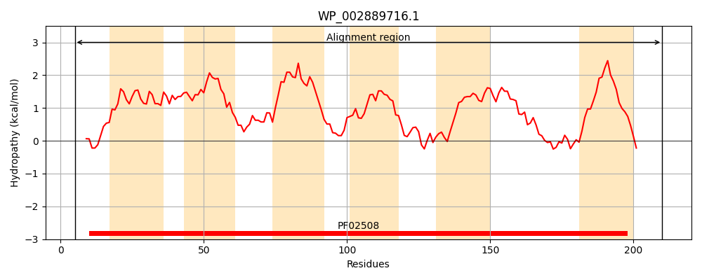
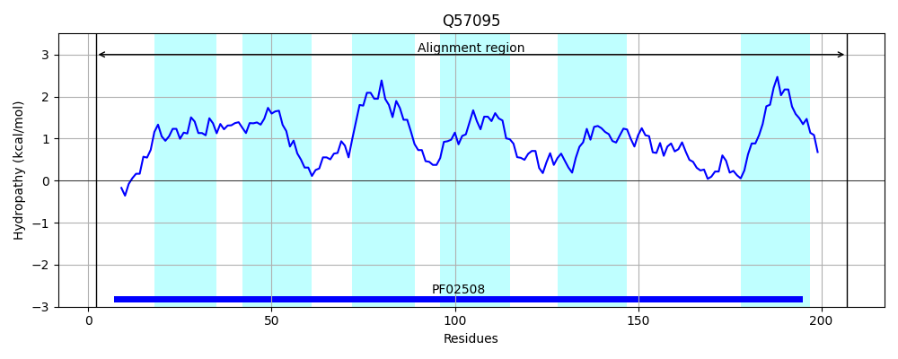
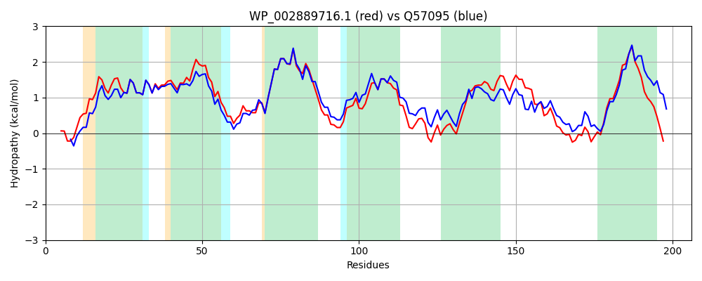

Hit Accession: Q57095
Hit TCID: 3.D.5.1.1
Hit Description: gnl|BL_ORD_ID|14173 gnl|TC-DB|Q57095|3.D.5.1.1 Na(+)-translocating NADH-quinone reductase subunit D (EC 1.6.5.-) (Na(+)-translocating NQR subunit D) (Na(+)-NQR subunit D) (NQR complex subunit D) (NQR-1 subunit D) - Vibrio alginolyticus.
Mach Len: 206
e:0.000000
Query TMS Count : 6
Hit TMS Count: 6
TMS-Overlap Score: 5.450000
Predicted Substrates:CHEBI:9175;sodium(1+)
BLAST Alignment:
Score: 790 , Bit scores: 308 bits, E-value: 3.6e-108, Alignment length: 206, Percentage identity: 75
Query: 5 SDMKEVKRVLVGPLIANNPIALQVLGVCSALAVTTKLETAFVMTIAVTLVTAFSSMFISMIRHHIPNSVRIIVQMAIIASLVIVVDQLLRAFAYETSKQLSVFVGLIITNCIVMGRAEAYAMKSPPLASFMDGIGNGLGYGAILIIVGFLRELIGSGKLFGITVLETVQNGGWYQPNGLFLLAPSAFFIIGLLIWALRSWKPEQQE 210
S + VK+ ++ P++ NNPIALQVLGVCSALAVTTKLETAFVMT+AVT VTA S+ +S+IR+HIPNSVRIIVQMAIIASLVIVVDQ+L+A+ Y+ SKQLSVFVGLIITNCIVMGRAEA+AMKS P+ S +DGIGNGLGYG +LI VGF REL GSGKLFG+ VL V NGGWYQPNGL LLAPSAFF+IG LIW +R KPEQ E
Sbjct: 2 SSAQNVKKSILAPVLDNNPIALQVLGVCSALAVTTKLETAFVMTLAVTFVTALSNFSVSLIRNHIPNSVRIIVQMAIIASLVIVVDQVLKAYLYDISKQLSVFVGLIITNCIVMGRAEAFAMKSAPVPSLIDGIGNGLGYGFVLITVGFFRELFGSGKLFGLEVLPLVSNGGWYQPNGLMLLAPSAFFLIGFLIWVIRILKPEQVE 207 | Protein Hydropathy Plots: |
|---|
|  |  |
Pairwise Alignment-Hydropathy Plot:
|
|---|
|  |